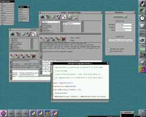

|
Project Center is GNUstep's integrated developement environment (IDE). On this page
we would like to present this application and its great features in a more detailed way.
Chief maintainer and main author of Project Center is Philippe C.D. Robert.
Please contact him if you would like to volunteer in extending Project Center.
Contents
Introduction
State
Documentation
How to get Project Center
Related links
|
Several years ago, NeXT Computer Inc. revolutionized application developing
by making two great developer tools avaible for their operation system OPENSTEP: Project Builder
and Interface Builder (which are also availble for Mac OS X nowadays). These applications made application developing a
lot easier and faster and
took NeXT ahead of the other computer manifactuers and operating system vendors.
As you may already know, GNUstep complies to the OpenStep API and is based
upon the design and interface philosophy seen on the NeXT platform.
|
|
Project Center is meant to be the
counter part to NeXT's Project Builder. Thus, it helps you to start new projects and
lets you manage your project files using a intuitive and well ordered graphical user interface.
Supporting the project types Application, Bundle, GormApplication,
Library and Tool this great application automatically creates the project makefiles and
aids you in the process of project compilation, package building and debugging. In the future,
built-in CVS support will be available, too.
|
|

|
|
Though Project Center is already a useable application, it is far from complete. Support is there for
project creation and inspection as well as basic Makefile generation. Using the GormApplication project type, you can
already create graphical applications using Project Center and Gorm in conjunction.
|
|
For installation help, please refer to the INSTALL file included in the Project Center
package or the GNUstep Build Guide.
Philippe started to put together a list of
Frequently Asked Questions (FAQ).
If you want to jump in development using Project Center and Gorm you should read
Pierre-Yves Rivaille's excellent tutorial on Gorm and Project Center (translations:
German).
|
|
The last offically released version is 0.2.5, which you can
download here.
You can also get Project Center using GNUstep's public CVS (module dev-apps). Please see the
GNUstep project page for more information.
|
|
Objective-C: general information and lots of links.
GNUstep Tutorials on Makefiles,
base and gui programming and more.
GNUstep Library Suite: Reference about
the different GNUstep libraries.
|
|